Pribadi yang disiplin, teliti, dan memiliki semangat belajar tinggi. Mampu beradaptasi dengan cepat terhadap hal baru, memiliki ketertarikan pada administrasi data, sistem digital, serta pengembangan aplikasi sederhana. Terbiasa bekerja secara terstruktur, detail-oriented, dan memiliki kemampuan problem solving yang baik. Kreatif, mandiri, serta memiliki kemauan kuat untuk terus berkembang dan memberikan hasil kerja terbaik.
Nama: Tisna
Lahir: Pandeglang, 06 Agustus 1996
Status: Menikah
Alamat: Pandeglang - Banten
Email: tisnajr89@gmail.com
WA: 0838 7531 6696
Daftar honorarium pengawas ulangan ms word.
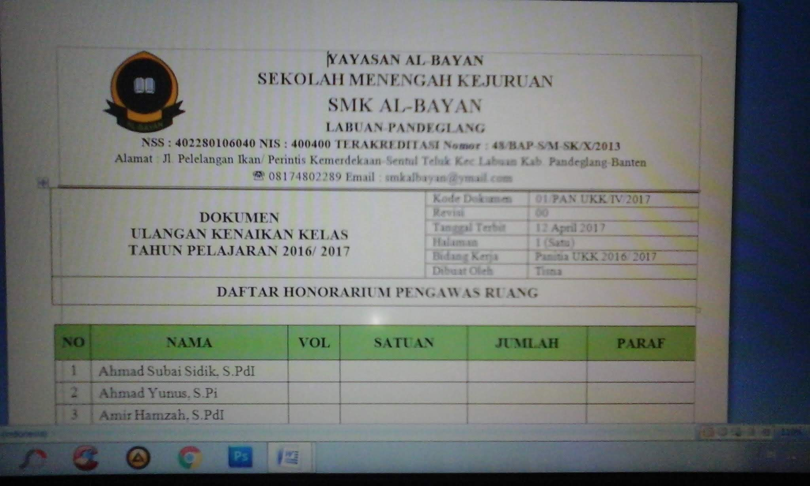
Laporan stok harian, mingguan, dan bulanan secara rapi dan akurat.
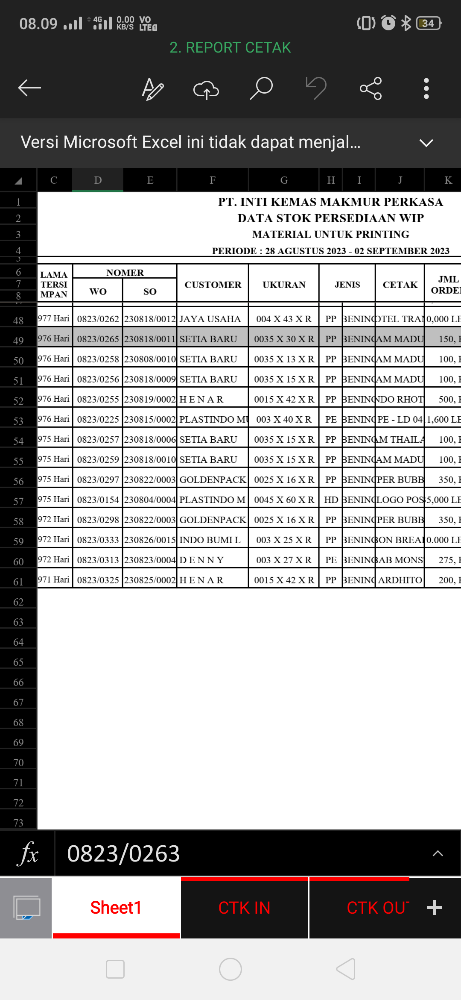
Laporan Pengecekan Harian QC.
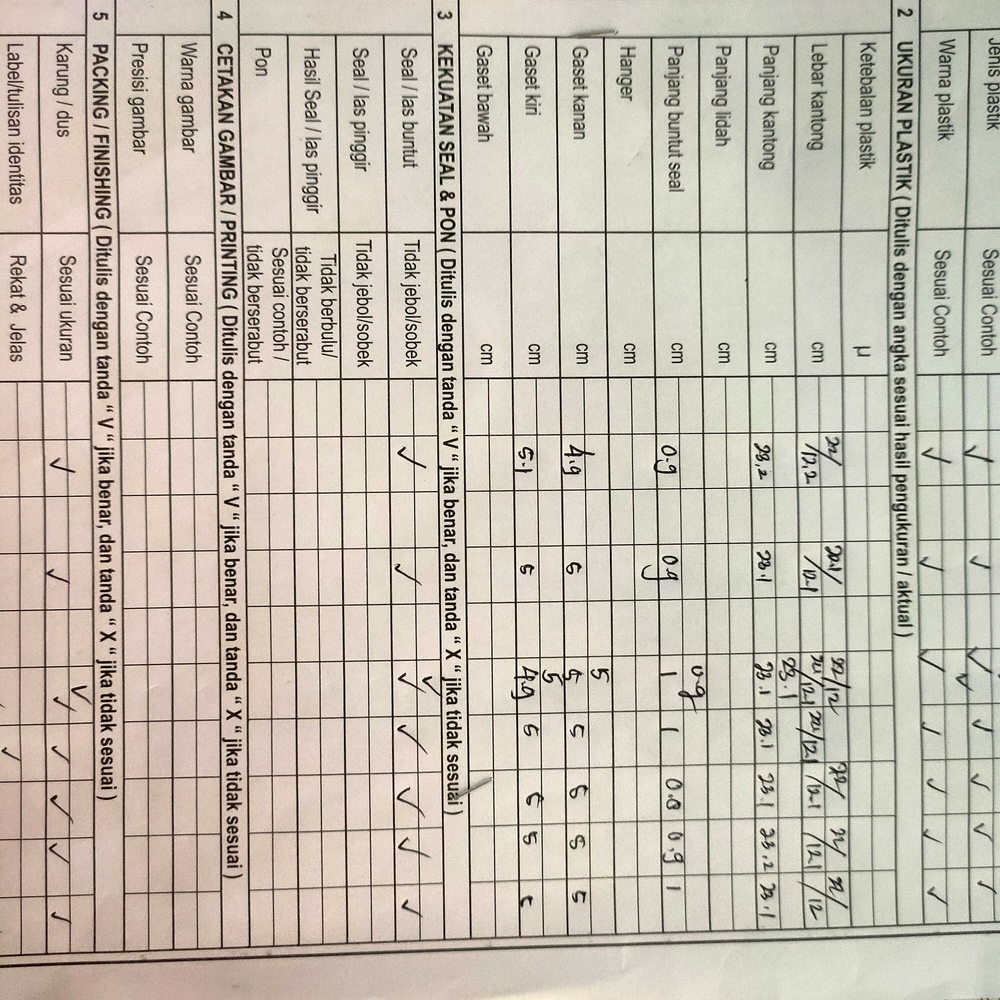
file Excel + macro untuk data barang dan penjualan sederhana.
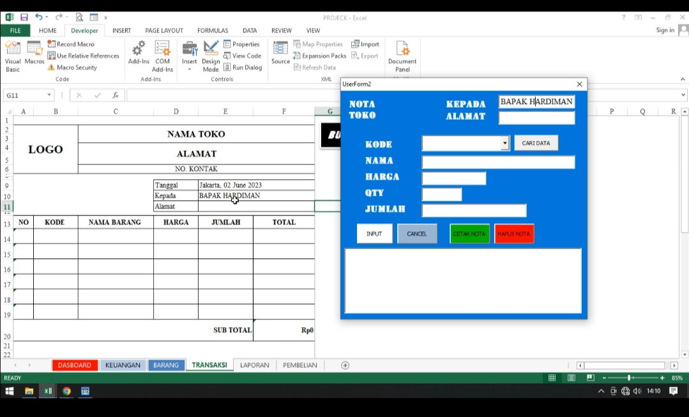
Mengelola arsip, surat menyurat, data murid, dan administrasi pendidikan.
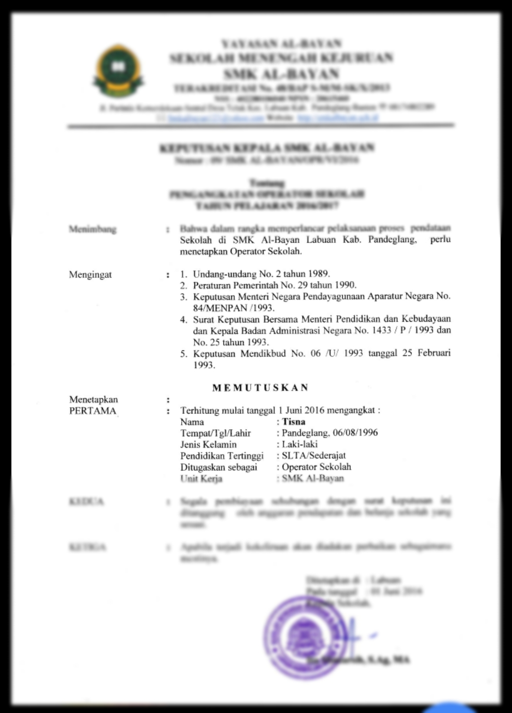
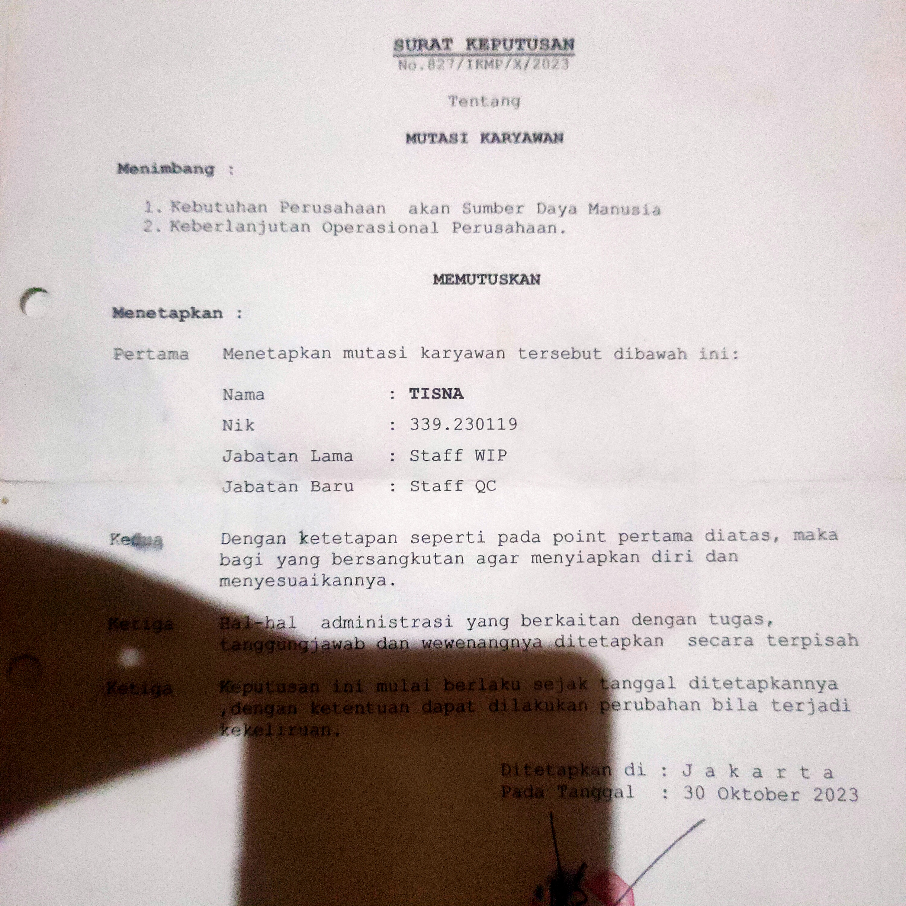
Test kejuruan Administrasi Perkantoran.
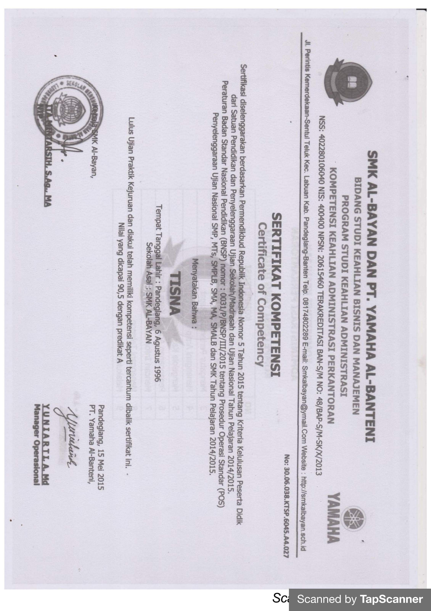
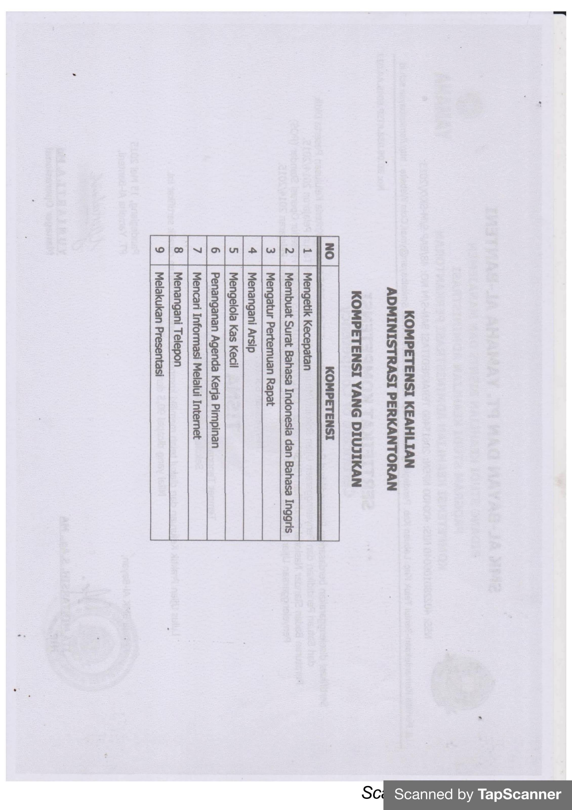
Kegiatan Proktor UNBK
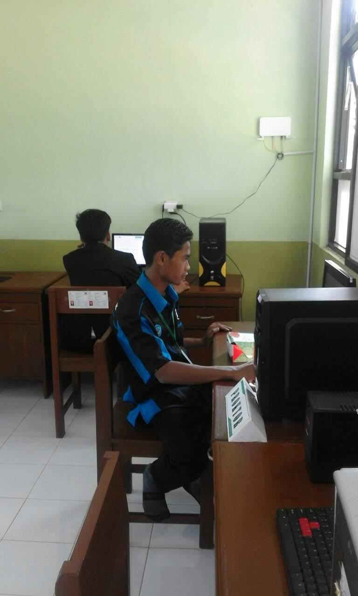
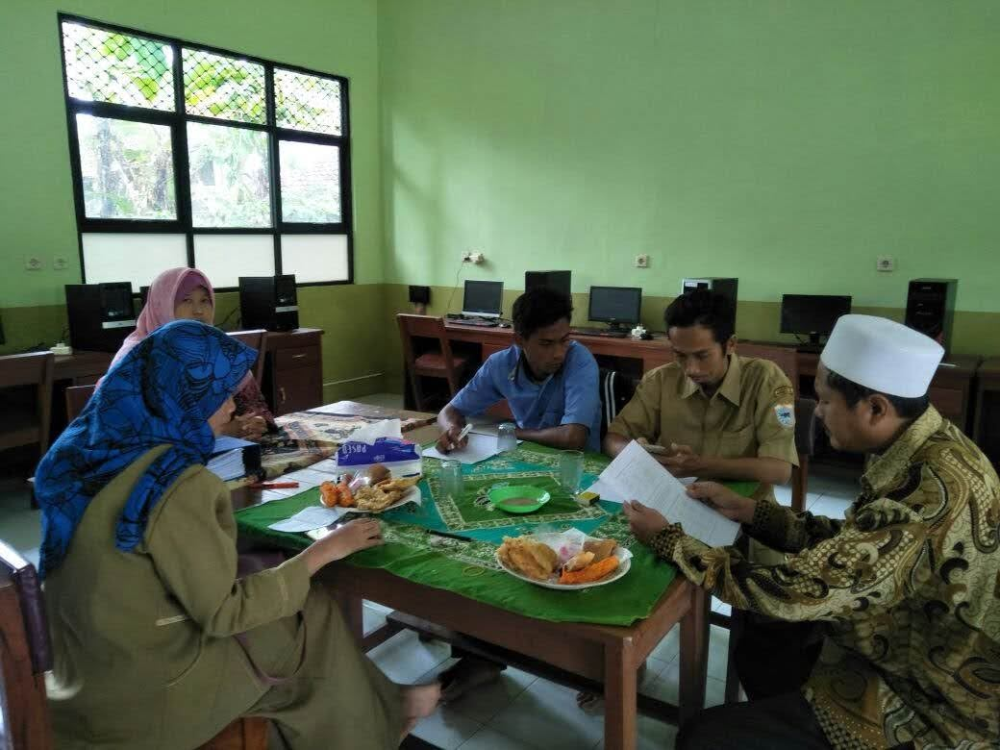
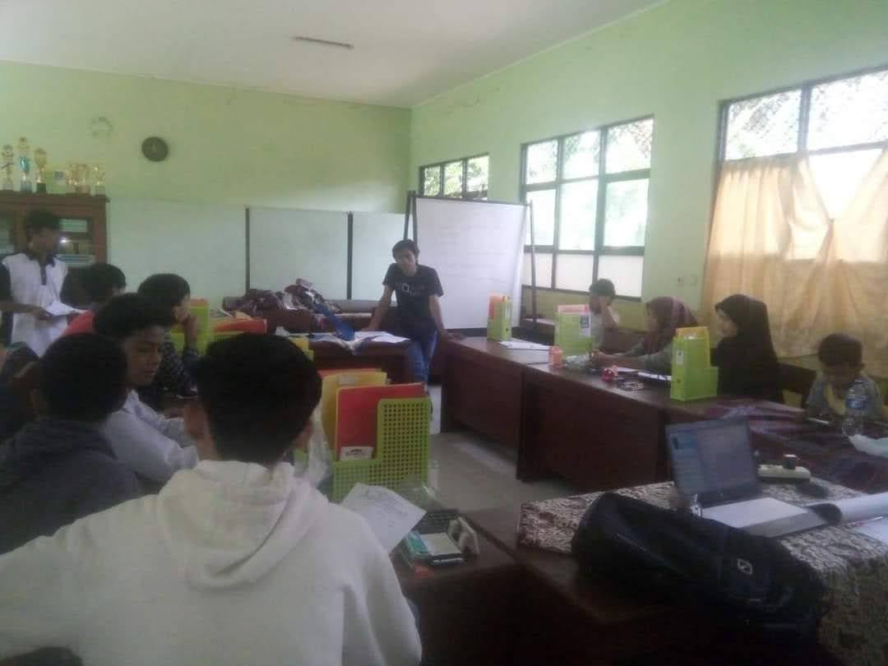